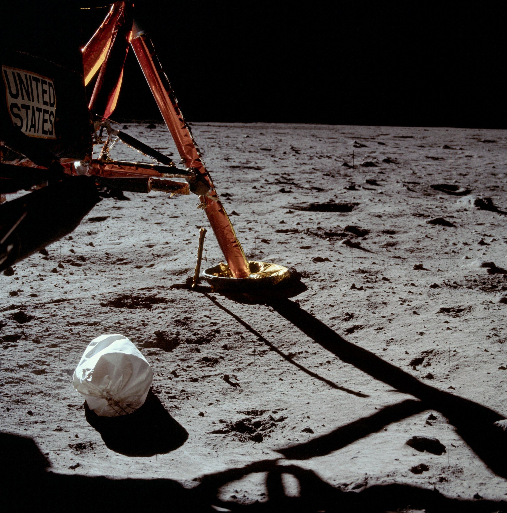

History Page
Файл стилей имеет достаточный размер.
Освоение космоса — освоение (обживание, промышленное использование) человеком космического пространства и небесных тел с помощью космических аппаратов. Исследования космоса ведутся как с помощью пилотируемых космических полётов, так и с помощью автоматических космических аппаратов.
Техническому исследованию космоса предшествовало развитие астрономии и создание крупных и относительно эффективных ракет в первой половине XX века. Началом эпохи освоения космоса можно считать запуск первого искусственного спутника Земли — «Спутника-1», запущенного Советским Союзом 4 октября 1957 г.
